6. Opérateurs et algorithmes¶
Une des tâches essentielles d’un SGBD est d’exécuter les requêtes SQL soumises par une application afin de fournir le résultat avec le meilleur temps d’exécution possible. La combinaison d’un langage de haut niveau, et donc en principe facile d’utilisation, et d’un moteur d’exécution puissant, apte à traiter efficacement des requêtes extrêmement complexes, est l’un des principaux atouts des SGBD (relationnels).
Ce chapitre présente les composants de base d’un moteur d’évaluation de requêtes: le modèle d’exécution, les opérateurs algébriques, et les principaux algorithmes de jointure. Ce sont les briques à partir desquels un système construit dynamiquement le programme d’exécution d’une requête, également appelé plan d’exécution. Dans l’ensemble du chapitre, nous donnons une spécification détaillée d’un catalogue d’opérateurs qui permettent d’évaluer toutes les requêtes SQL conjonctives (c’est-à-dire sans négation).
La manière dont le plan d’exécution est construit à la volée quand une requête est soumise fait l’objet du chapitre suivant.
S1: Modèle d’exécution: les itérateurs¶
Supports complémentaires:
L’exécution d’une requête s’effectue par combinaison d’opérateurs qui assurent chacun une tâche spécialisée. De même qu’une requête quelconque peut être représentée par une expression de l’algèbre relationnelle, construite à partir de cinq opérations de base, un plan d’exécution consiste à combiner les opérateurs appropriés, tirés d’une petite bibliothèque de composants logiciels qui constitue la « boîte à outils » du moteur d’exécution.
Ces composants ont une forme générique qui se retrouve dans tous les systèmes. D’une manière générale, ils se présentent comme des « boîtes noires » qui consomment des flux de données en entrées et produisent un autre flux de données en sortie. De plus, ces boîtes peuvent s’interconnecter, l’entrée de l’une étant la sortie de l’autre. Enfin, l’ensemble est conçu pour minimiser les resources matérielles nécessaires, et en particulier la mémoire RAM. Nous commençons par étudier en détail ce dernier aspect.
Matérialisation et pipelinage¶
Imaginons qu’il faille effectuer deux opérations \(o\) et \(o'\) (par exemple un parcours d’index suivi d’un accès au fichier) pour évaluer une requête. Une manière naive de procéder est d’exécuter d’abord l’opération \(o\), de stocker le résultat intermédiaire en mémoire cache s’il y a de la place, ou sur disque sinon, et d’utiliser le cache ou le fichier intermédiaire comme source de données pour \(o'\).
Pour notre exemple, le parcours d’index (l’opération \(o\)) rechercherait toutes les adresses des enregistrements satisfaisant le critère de recherche, et les placerait dans une structure temporaire. Puis l’opération \(o'\) irait lire ces adresses pour accéder au fichier de données et fournir finalement les nuplets à l’application (Fig. 6.1).
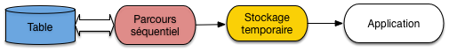
Fig. 6.1 Exécution d’une requête avec matérialisation¶
Sur un serveur recevant beaucoup de requêtes, la mémoire centrale deviendra rapidement indisponible ou trop petite pour accueillir les résultats intermédiaires qui devront donc être écrits sur disque. Cette solution de matérialisation des résultats intermédiaires est alors très pénalisante car les écritures/lectures sur disque répétées entre chaque opération coûtent d’autant plus cher en temps que la séquence d’opérations est longue.
Un autre inconvénient sévère est qu’il faut attendre qu’une première opération soit exécutée dans son intégralité avant d’effectuer la seconde.
L’alternative appelée pipelinage consiste à ne pas écrire les enregistrements produits par \(o\) sur disque mais à les utiliser immédiatement comme entrée de \(o'\). Les deux opérateurs, \(o\) et \(o'\), sont donc connectés, la sortie du premier tenant lieu d’entrée au second. Dans ce scénario, \(o\) tient le rôle du producteur, \(o'\) celui du consommateur. Chaque fois que \(o\) produit une adresse d’enregistrement, \(o'\) la reçoit et va lire l’enregistrement dans le fichier (Fig. 6.2).
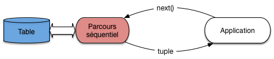
Fig. 6.2 Exécution d’une requête avec pipelinage¶
On n’attend donc pas que \(o\) soit terminée et que l’ensemble des enregistrements résultat de \(o\) ait été produit pour lancer \(o'\). On peut ainsi combiner l’exécution de plusieurs opérations, cette combinaison constituant justement le plan d’exécution final.
Cette méthode a deux avantages très importants:
il n’est pas nécessaire de stocker un résultat intermédiaire, puisque ce résultat est consommé au fur et à mesure de sa production;
l’utilisateur reçoit les premiers nuplets du résultat alors même que ce résultat n’est pas calculé complètement.
Si l’application qui reçoit et traite le résultat de la requête passe un peu de temps sur chaque nuplet produit, l’exécution de la requête peut même ne plus constituer un facteur pénalisant. Si, par exemple, l’application qui demande l’exécution met 0,1 seconde pour traiter chaque nuplet alors que le plan d’exécution peut fournir 20 nuplets par secondes, c’est la première qui constitue le point de contention, et le coût de l’exécution disparaît dans celui du traitement. Il en irait tout autrement s’il fallait d’abord calculer tout le résultat avant de lui appliquer le traitement: dans ce cas les temps passés dans chaque phase s’additionneraient.
Cette remarque explique une dernière particularité: un plan d’exécution se déroule en fonction de la demande et pas de l’offre. C’est toujours le consommateur, \(o'\) dans notre exemple, qui « tire » un enregistrement de son producteur \(o\), quand il en a besoin, et pas \(o\) qui « pousse » un enregistrement vers \(o'\) dès qu’il est produit. La justification est simplement que le consommateur, \(o'\) , pourrait se retrouver débordé par l’afflux d’information sans avoir assez de temps pour les traiter, ni assez de mémoire pour les stocker.
L’application qui exécute une requête est elle-même le consommateur ultime et décide du moment où les données doivent lui être communiquées. Elle agit en fait comme une sorte d’aspirateur branché sur des tuyaux de données qui vont prendre leurs racines dans les structures de stockage de la base de données: tables et index.
Cela se traduit, quand on accède à un SGBD avec un langage de programmation, par un mécanisme d’accès toujours identique, consistant à:
ouvrir un curseur par exécution d’une requête;
avancer le curseur sur le résultat, nuplet par nuplet, par des appels à une fonction de type
next();fermer (optionnel) le curseur quand le résultat a été intégralement parcouru.
Le mécanisme est suggéré sur la Fig. 6.2. L’application demande un nuplet par appel à la fonction next() adressé à l’opérateur d’accès direct. Ce dernier, pour s’exécuter, a besoin d’une adresse d’enregistrement: il l’obtient en adressant lui-même la fonction next() à l’opérateur de parcours d’index. Cet exemple simple est en fait une illustration du principe fondamental de la constitution d’un plan d’exécution: ce dernier est toujours un graphe d’opérateurs produisant à la demande des résultats intermédiaires non matérialisés.
Opérateurs bloquants¶
Parfois il n’est pas possible d’éviter le calcul complet de l’une des opérations avant de continuer. On est alors en présence d’un opérateur dit bloquant dont le résultat doit être entièrement produit (et matérialisé en cache ou écrit sur disque) avant de démarrer l’opération suivante. Par exemple:
le tri (
order by);la recherche d’un maximum ou d’un minimum (
max,min);l’élimination des doublons (
distinct);le calcul d’une moyenne ou d’une somme (
sum,avg);un partitionnement (
group by);
sont autant d’opérations qui doivent lire complètement les données en entrée avant de produire un résultat (il est facile d’imaginer qu’on ne peut pas produire le résultat d’un tri tant qu’on n’a pas lu le dernier élément en entrée).
Une expérience à tenter
Si vous êtes sur une base avec une table T de taille importante,
tentez l’expérience suivante. Exécutez une première requête:
select * from T
et une seconde
select * from T order by *
Vous devriez constater une attente significative avant que le résultat de la seconde commence à s’afficher. Que se passe-t-il? Relisez ce qui précède.
Un opérateur bloquant introduit une latence dans l’exécution de la
requête. En pratique, l’application est figée tant que la phase
de préparation, exécutée à l’appel de la fonction open(), n’est pas terminée.
À l’issue de la phase de latence, l’exécution peut reprendre et se dérouler
alors très rapidement. L’inconvénient, pour une application, d’une
exécution avec opérateur bloquant est qu’elle reste
à ne rien faire pendant que le SGBD travaille, puis c’est l’inverse: le débit
de données est important, mais c’est à l’application d’effectuer son travail.
Le temps passé aux deux phases d’additionne, ce qui est un facteur pénalisant
pour la performance globale.
Cela amène à distinguer deux critères de performance:
le temps de réponse: c’est le temps mis pour obtenir un premier nuplet; il est quasi-instantané pour une exécution sans opérateur bloquant;
le temps d’exécution: c’est le temps mis pour obtenir l’ensemble du résultat.
On peut avoir une exécution avec un temps de réponse important et un temps d’exécution court, et l’inverse. En général, on choisira de privilégier le temps de réponse, pour pouvoir traiter les données reçues dès que possible.
Itérateurs¶
Le mécanisme de pipelinage « à la demande » est implanté au moyen de la notion générique d’itérateur, couramment rencontré par ailleurs dans les langages de programmation offrant des interfaces de traitement de collections. Chaque itérateur peut s’implanter comme un objet doté de trois fonctions:
open()commence le processus pour obtenir des nuplets résultats: elle alloue les resources nécessaires, initialise des structures de données et appelleopen()pour chacune de ses sources (c’est-à-dire pour chacun des itérateurs fournissant des données en entrée);
next()effectue une étape de l’itération, retourne le nuplet produit par cette étape, et met à jour les structures de données nécessaires pour obtenir les résultats suivants; la fonction peut appeler une ou plusieurs foisnext()sur ses sources.
close()termine l’itération et libère les ressources, lorsque tous les articles du résultat ont été obtenus. Elle appelle typiquementclose()sur chacune de ses sources.
Voici une première illustration d’un itérateur, celui
du balayage séquentiel d’une table que nous appellerons FullScan. La fonction
open() de cet itérateur place un curseur au début du fichier à lire.
function openScan
{
# Entrée: $T est la table
# Initialisations
$p = $T.first; # Premier bloc de T
$e = $p.init; # On se place avant le premier nuplet
}
La fonction next renvoie l’enregistrement suivant, ou null.
function nextScan
{
# Avançons sur le nuplet suivant
$e = $p.next;
# A-t-on atteint le dernier enregistrement du bloc ?
if ($e = null) do
# On passe au bloc suivant
$p = $T.next;
# Dernier bloc dépassé?
if ($p = null) then
return null;
else
$e = $p.first;
fi
done
return $e;
}
La fonction close libère les ressources.
function closeScan
{
close($T);
return;
}
openScan initialise la lecture en se plaçant avant le premier enregistrement
du premièr bloc de
\(T\). Chaque appel à nextScan () retourne un enregistrement/nuplet. Si le bloc courant a été entièrement lu,
il lit le bloc
suivant et retourne le premier enregistrement de ce bloc.
Avec ce premier itérateur, nous savons déjà exécuter au moins une requête SQL! C’est la plus simple de toutes.
select * from T
Doté de notre itérateur FullScan, cette requête s’exécute de la manière suivante:
# Parcours séquentiel de la table T
$curseur = new FullScan(T);
$nuplet = $curseur.next();
while [$nuplet != null ]
do
# Traitement du nuplet
...
# Récupération du nuplet suivant
$nuplet = $curseur.next();
done
# Fermeture du curseur
$curseur.close();
Ceux qui ont déjà pratiqué l’accès à une base de données par une interface de programmation reconnaîtront sans peine la séquence classique d’ouverture d’un curseur, de parcours du résultat et de fermeture du curseur. C’est facile à comprendre pour une requête aussi simple que celle illustrée ci-dessus. La beauté du modèle d’exécution est que la même séquence s’applique pour des requêtes extrêmement complexes.
Quiz¶
Une application reçoit 100 000 nuplets, résultat d’une requête SQL. Le traitement par l’application de chaque nuplet prend 0,5 sec. Le SGBD met de son côté 0,2 secondes pour préparer chaque nuplet.
En mode matérialisation, le temps de réponse est de

En mode matérialisation, l’application finit de s’exécuter après
En mode pipelinage, le temps de réponse est de
En mode pipelinage, l’application finit de s’exécuter après
Parmi les requêtes suivantes, quelles sont celles qui nécessitent un opérateur bloquant. (Aide : se demander s’il faut lire ou non toute la table avant de produire le premier nuplet du résultat).

{kind=link}
{kind=link}
S2: les opérateurs de base¶
Supports complémentaires:
Cette section est consacrée aux principaux opérateurs utilisés dans l’évaluation d’une requête « simple », accédant à une seule table. En d’autres termes, il suffisent à évaluer toute requête de la forme:
select a1, a2, ..., an from T where condition
En premier lieu, il faut accéder à la table T. Il existe exactement deux méthodes possibles:
Accès séquentiel. Tous les nuplets de la table sont examinés, dans l’ordre du stockage.
Accès par adresse. Si on connaît l’adresse du nuplet, on peut aller lire directement le bloc et obtenir ainsi un accès optimal.
Chaque méthode correspond à un opérateur. Le second (l’opérateur d’accès direct)
est toujours associé à une source qui
lui fournit l’adresse des enregistrements. Dans un SGBD relationnel où
le modèle de données ne connaît pas la notion d’adresse physique, cette source
est toujours un opérateur de parcours d’index. Nous allons donc également décrire
ce dernier sous forme d’itérateur. Enfin, il est nécessaire d’effectuer une
sélection (pour appliquer la condition de la clause where) et une projection.
Ces deux derniers opérateurs sont triviaux.
Parcours séquentiel¶
Le parcours séquentiel d’une table est utile dans un grand nombre de cas. Tout d’abord on a souvent besoin de parcourir tous les enregistrements d’une relation, par exemple pour faire une projection. Certains algorithmes de jointure utilisent le balayage d’au moins une des deux tables. On peut enfin vouloir trouver un ou plusieurs enregistrements d’une table satisfaisant un critère de sélection.
L’opérateur est implanté par un itérateur qui a déjà été discuté dans la section précédente. Son coût est relativement élevé: il faut accéder à tous les blocs de la table, et le temps de parcours est donc proportionnel à la taille de cette dernière.
Cette mesure « brute » doit cependant être pondérée par le fait qu’une table est le plus souvent stockée de manière contiguë sur le disque, et se trouve de plus partiellement en mémoire RAM si elle a été utilisée récemment. Comme nous l’avons vu dans le chapitre Dispositifs de stockage, le parcours d’un segment contigu évite les déplacements des têtes de lecture et la performance est alors essentiellement limitée par le débit du disque.
Parcours d’index¶
On considère dans ce qui suit que la structure de l’index est celle de l’arbre B, ce qui est presque toujours le cas en pratique.
L’algorithme de parcours d’index a été étudié dans le chapitre Structures d’index: l’arbre B. Rappelons brièvement qu’il se décompose en deux phases. La première est une traversée de l’index en partant de la racine jusqu’à la feuille contenant l’entrée associée à la clé de recherche. La seconde est un parcours séquentiel des feuilles pour trouver toutes les adresses correspondant à la clé (il peut y en avoir plusieurs dans le cas général) ou à l’intervalle de clés.
Ces deux phases s’implantent respectivement par les fonctions open() et next() de l’itérateur
IndexScan. Voici tout d’abord la fonction open().
function openIndexScan
{
# $c est la valeur de la clé recherchée; $I est l'index
# On parcours les niveaux de l'index en partant de la racine
$bloc = $I.racine();
while [$bloc.estUneFeuille() = false]
do
# On recherche l'entrée correspondant à $c
for $e in ($bloc.entrées)
do
if ($e.clé > $c)
break;
done
$bloc = $GA.lecture ($e.adresse);
done
# $bloc est la feuille recherchée; on se positionne sur la
# première occurrence de $a
$e = $bloc.premièreOccurrence ($c)
# Fin de la première phase
}
La fonction next() est identique à celle du parcours séquentiel d’un fichier, la seule différence est qu’elle renvoie des adresses d’enregistrement et pas des nuplets. La version ci-dessous, simplifiée, ne montre pas le passage d’une feuille à une autre.
function nextIndexScan
{
# Seconde phase: on est positionné sur une feuille de l'arbre, on
#- avance sur les entrées correspondant à la clé $c
if ($e.clé = $c) then
$adresse = $e.adresse;
$e = $e.next();
return $adresse;
else
return null;
fi
}
Accès par adresse¶
Quand on connait l’adresse d’un enregistrement, donc l’adresse du bloc où il est stocké, y accéder coûte une lecture unique de bloc. Cette adresse (rappelons que l’adresse d’un enregistrement se décompose en une adresse de bloc et une adresse d’enregistrement locale au bloc) doit nécessairement être fournie par un autre itérateur, que nous appellerons la source dans ce qui suit (et qui, en pratique, est toujours un parcours d’index).
L’itérateur
d’accès direct (DirectAccess) s’implante alors très facilement. Voici la
fonction next() .
function nextDirectAccess
{
# $source est l'opérateur source; $GA est le gestionnaire d'accès
# Récupérons l'adresse de l'enregistrement à lire
$a = $source.next();
# Plus d'adresse? On renvoie null
if ($a = null) then
return null;
else
# On effectue par une lecture (logique) du bloc
$b = $GA.lecture ($a.adressBloc);
# On récupère l'enregistrement dans le bloc
$e = $b.get ($a.adresseLocale)
return $e;
fi
}
Cet opérateur est très efficace pour récupérer un enregistrement par son adresse, notamment dans le cas fréquent où le bloc est déjà dans le cache. Quand on l’exécute de manière intensive sur une table, il engendre de nombreux accès aléatoires et on peut se poser la question de préférer un parcours séquentiel. La décision relève du processus d’optimisation: nous y revenons plus loin.
Opérateurs de sélection et de projection¶
L’opérateur de sélection (le plus souvent appelé filtre) applique une condition aux enregistrements obtenus d’un autre itérateur. Voici la fonction next() de l’itérateur.
function nextFilter
{
# $source est l'opérateur fournissant les nuplets; $C est la condition de sélection
# On récupère un nuplet de la source
$nuplet = $source.next();
# Et on continue tant que la sélection n'est pas satisfaite, ou la source épuisée
while ($nuplet != null and $nuplet.test($C) = false)
do
$nuplet = $source.next();
done
return $nuplet;
}
En pratique, la source est toujours soit un itérateur de parcours séquentiel, soit un itérateur d’accès direct. Le filtre a pour effet de réduire la taille des données à traiter, et il est donc bénéfique de l’appliquer le plus tôt possible, immédiatement après l’accès à chaque enregistrement.
Note
Cette règle est une des heuristiques les plus courantes de la phase dite d’optimisation que nous présenterons plus tard. Elle est souvent décrite par l’expression « pousser les sélections vers la base de l’arbre d’exécution ».
Dans certains systèmes (p.e., Oracle), cet opérateur est d’ailleurs intégré aux opérateurs d’accès à une table (séquentiel ou direct) et n’apparaît donc pas explicitement dans le plan d’exécution.
L’opérateur de projection, consistant à ne conserver que certains attributs des nuplets en entrée, est trivial. La fonction next() prend un nuplet en entrée, en extrait les attributs à conserver et renvoie un nuplet formé de ces derniers.
Exécution de requêtes mono-tables¶
Reprenons notre requête mono-table générique, de la forme:
select a1, a2, ..., an from T where condition
Notre petit catalogue d’opérateurs nous permet de l’exécuter. Il nous donne même plusieurs options selon que l’on utilise ou pas un index. Voici un exemple concret que nous allons examiner en détails.
select titre from Film where genre='SF' and annee = 2014
Et nous allons supposer que la table des films est indexée sur l’année. Avec notre boîte à outils, il existe (au moins) deux programmes, ou plans d’exécution, illustrés par la Fig. 6.3.
{kind=link}
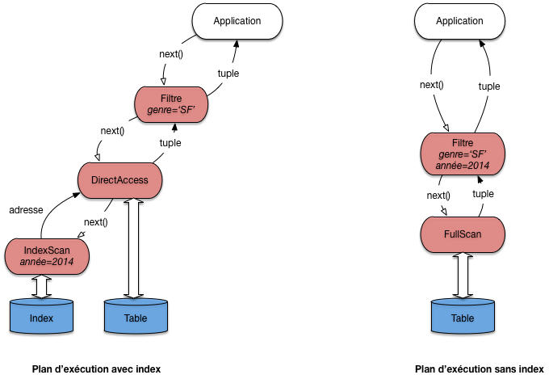
Fig. 6.3 Deux plans d’exécution pour une requête monotable¶
Le premier plan utilise l’index pour obtenir les adresses des films
parus en 2014 grâce à un opérateur IndexScan. Il est associé à
un opérateur DirectAccess qui récupère, une par une, les adresses
et obtient, par une lecture directe, le nuplet correspondant. Enfin,
chaque nuplet passe par l’opérateur de filtre qui ne conserve que ceux
dont le genre est “SF”.
On voit sur ce premier exemple qu’un plan d’exécution est un programme d’une forme très particulière. Il est constitué d’un graphe d’opérateurs connectés par des “tuyaux” où circulent des nuplets. L’application, qui communique avec la racine du graphe par l’interface de programmation, joue le rôle d’un « aspirateur » qui tire vers le haut ce flux de données fournissant le résultat de la requête.
Note
Pour une requête monotable, le graphe est linéaire. Quand la requête comprend des jointures, il prend la forme d’un arbre (binaire).
Examinons maintenant le second plan. Il consiste simplement à parcourir
séquentiellement la table (avec un opérateur FullScan), suivi d’un
filtre qui applique les deux critères de sélection.
Quel est le meilleur de ces deux plans? En principe, l’utilisation
de l’index donne de bien meilleurs résultats. Et en général,
le choix d’utiliser le parcours séquentiel ou l’accès par index
peut sembler trivial: on regarde si un index est disponible,
et si oui on l’utilise comme chemin d’accès. Dans ce cas le plan
d’exécution est caractérisé par l’association de l’opérateur IndexScan
qui récupère des adresses, et de l’opérateur DirectAccess qui récupère les nuplets
en fonction des adresses.
En fait, ce choix est légèrement compliqué par les considérations suivantes:
Quelle est la taille de la table? Si elle tient en quelques blocs, un accès par l’index est probablement inutilement compliqué.
Le critère de recherche porte-t-il sur un ou sur plusieurs attributs? S’il y a plusieurs attributs, les critères sont-ils combinés par des and ou des or?
Quelle est la sélectivité de la recherche? On constate que quand une partie significative de la table est sélectionnée, il devient inutile, voire contre-performant, d’utiliser un index.
Le cas réellement trivial est celui – fréquent – d’une recherche avec un critère d’égalité sur la clé primaire (ou plus généralement sur un attribut indexé par un index unique). Dans ce cas l’utilisation de l’index ne se discute pas. Exemple:
select * from Film where idFilm = 100
Dans beaucoup d’autres situations les choses sont un peu plus subtiles. Le cas le plus délicat est celui d’une recherche par intervalle sur un champ indexé.
Voici un exemple simple de requête dont l’optimisation n’est pas évidente à priori. Il s’agit d’une recherche par intervalle (comme toute sélection avec \(>\) , ou une recherche par préfixe).
select *
from Film
where idFilm between 100 and 1000
L’utilisation d’un index n’est pas toujours appropriée dans ce cas, comme le montre le petit exemple de la Fig. 6.4. Dans cet exemple, le fichier a quatre blocs, et les enregistrements sont identifiés (clé unique) par un numéro. On peut noter que le fichier n’est pas ordonné sur la clé (il n’y a aucune raison à priori pour que ce soit le cas).
{kind=link}
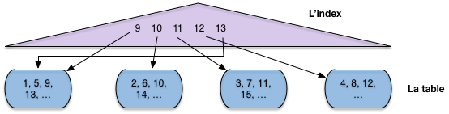
Fig. 6.4 Recherche par intervalle avec index¶
L’index en revanche s’appuie sur l’ordre des clés (il s’agit ici typiquement d’un arbre B, voir chapitre Structures d’index: l’arbre B). À chaque valeur de clé dans l’index est associé un pointeur (une adresse) qui désigne l’enregistrement dans le fichier.
Maintenant supposons:
que l’on effectue une recherche par intervalle pour ramener tous les enregistrements entre 9 et 13;
que la mémoire centrale disponible soit de trois blocs.
Si on choisit d’utiliser l’index, comme semble y inviter le fait que le critère de recherche porte sur la clé primaire, on va procéder en deux étapes.
Étape 1: on récupère dans l’index toutes les valeurs de clé comprises entre 9 et 13 (opérateur
IndexScan).Étape 2: pour chaque valeur obtenue dans l’étape 1, on prend le pointeur associé, on lit le bloc dans le fichier et on en extrait l’enregistrement (opérateur
DirectAccess).
Donc on va lire le bloc 1 pour l’enregistrement 9, puis le bloc 2 pour l’enregistrement 10, puis le bloc 3 pour l’enregistrement 11. À ce moment-là la mémoire (trois blocs) est pleine. Quand on lit le bloc 4 pour y prendre l’enregistrement 12, on va supprimer du cache le bloc le plus anciennement utilisé, à savoir le bloc 1. Pour finir, on doit relire, sur le disque, le bloc 1 pour l’enregistrement 13. Au total on a effectué 5 lectures, alors qu’un simple balayage du fichier se serait contenté de 4, et aurait de plus bénéficié d’une lecture séquentielle.
Cette petite démonstration est basée sur une situation caricaturale et s’appuie sur des ordres de grandeurs qui ne sont clairement pas représentatifs d’une vraie base de données. Elle montre simplement que les accès au fichier, à partir d’un index de type arbre B, sont aléatoires et peuvent conduire à lire plusieurs fois le même bloc. Même sans cela, des recherches par adresses mènent à déclencher des opérations d’accès à un bloc pour lire un unique enregistrement à chaque fois, ce qui s’avère pénalisant à terme par rapport à un simple parcours.
La leçon, c’est que le SGBD ne peut pas aveuglément appliquer une stratégie pré-déterminée pour exécuter une requête. Il doit examiner, parmi les solutions possibles (au du moins celles qui semblent plausibles) celles qui vont donner le meilleur résutat. C’est un module particulier (et très sensible), l’optimiseur, qui se charge de cette estimation.
Voici quelques autres exemples, plus faciles à traiter.
select * from Film
where idFilm = 20
and titre = 'Vertigo'
Ici on utilise évidemment l’index pour accéder à l’unique film (s’il existe) ayant l’identifiant 20. Puis, une fois l’enregistrement en mémoire, on vérifie que son titre est bien Vertigo. C’est un plan similaire à celui de la Fig. 6.3 (gauche) qui sera utilisé.
Voici le cas complémentaire:
select * from Film
where idFilm = 20
or titre = 'Vertigo'
On peut utiliser l’index pour trouver le film 20, mais il faudra de toutes manières faire un parcours séquentiel pour rechercher Vertigo s’il n’y a pas d’index sur le titre. Autant donc s’épargner la recherche par index et trouver les deux films au cours du balayage. Le plan sera donc plutôt celui de la Fig. 6.3, à droite.
Quiz¶
L’opérateur de parcours d’index (
IndexScan) fournit, à chaque appelnext()On suppose qu’il existe un index sur l’année, quelles sont parmi les requêtes suivantes celles dont le plan d’exécution combine
IndexScanetDirectAccess:Parmi les requêtes suivantes, quelles sont celles qui peuvent s’évaluer avec un plan d’exécution comprenant seulement un
IndexScan:
Dans le second plan d’exécution, celui basé sur un index, peut-on inverser les opérateurs d’accès direct et de filtre ?
Reprenez l’exemple du cours d’un accès avec un index pour un intervalle [9,13]. Supposons maintenant que le fichier est trié sur la clé. Combien faudra-t-il lire de blocs dans le pire des cas, en supposant qu’un bloc contient 10 nuplets ?
Si le fichier est trié sur la clé de l’index, est-il toujours préférable de passer par l’index pour une recherche par intervalle ?
S3: Le tri externe¶
Supports complémentaires:
Le tri est une autre opération
fondamentale pour l’évaluation des requêtes. On a besoin du
tri par exemple lorsqu’on fait une projection ou une union et qu’on
désire éliminer les enregistrements en double (clauses distinct,
order by de SQL).
On verra également qu’un
algorithme de jointure courant consiste à trier au préalable
sur l’attribut de jointure les relations à joindre.
Le tri d’une relation sur un ou plusieurs attributs utilise l’algorithme de tri-fusion (sort-merge) en mémoire externe. Il est du type « diviser pour régner », avec deux phases. Dans la première phase on décompose le problème récursivement en sous-problèmes, et ce jusqu’à ce que chaque sous-problème puisse être résolu simplement et efficacement. La deuxième phase consiste à agréger récursivement les solutions.
Dans le cas l’algorithme de tri-fusion, les deux phases se résument ainsi:
Partitionnement de la table en fragments tels que chaque fragment tienne en mémoire centrale. On trie alors chaque fragment (en mémoire), en général avec l’algorithme de Quicksort.
Fusion des fragments triés.
Regardons en détail chacune des phases.
Phase de tri¶
Supposons que nous disposons pour faire le tri de \(M\) blocs en mémoire. La phase de tri commence par prendre un fragment constitué des \(M\) premiers blocs du fichier et les charge en mémoire. On trie ces blocs avec Quicksort et on écrit le fragment trié sur le disque dans une zone temporaire (Fig. 6.5). On recommence avec les \(M\) blocs suivants du fichier, jusqu’à ce que tout le fichier ait été lu par fragments de \(M\) blocs,
{kind=link}
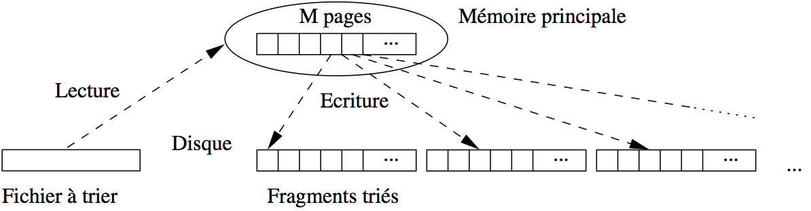
Fig. 6.5 Algorithme de tri-fusion: phase de tri¶
À l’issue de cette phase on a \(\lceil B / M \rceil\) fragments triès, où \(B\) est le nombre de blocs du fichier.
Exemple
Si le fichier occupe 100 000 blocs, et la mémoire disponible pour le tri est de 1 000 blocs, cette phase découpe le fichier en 100 fragments de 1 000 blocs chacun. Ces 100 fragments sont lus un par un, triés, et écrits dans la zone temporaire.
Phase de fusion¶
La phase de fusion consiste à fusionner les fragments. Si on fusionne n fragments de taille M, on obtient en effet un nouveau fragment trié de taille \(n \times M\). En général, une étape de fusion suffit pour obtenir l’ensemble du fichier trié, mais si ce dernier est très gros - ou si la mémoire disponible est insuffisante - il est parfois nécessaire d’effectuer plusieurs étapes de fusion.
Commençons par regarder comment on fusionne en mémoire centrale deux listes triées \(A\) et \(B\). On a besoin de trois zones en cache. Dans les deux premières, les deux listes à trier sont stockées. La troisième zone de cache sert pour le résultat, c’est-à-dire la liste résultante triée.
L’algorithme employé (dit fusion ou « merge ») est une technique très efficace qui consiste à parcourir en parallèle et séquentiellement les listes, en une seule fois. Le parcours unique est permis par le tri des listes sur un même critère.
La Fig. 6.6 montre comment on fusionne \(A\) et \(B\). On maintient deux curseurs, positionnés au départ au début de chaque liste. L’algorithme compare les valeurs contenues dans les cellules pointées par les deux curseurs. On compare ces deux valeurs, puis:
(choix 1) si elles sont égales, on déplace les deux valeurs dans la zone de résultat; on avance les deux curseurs d’un cran
(choix 2) sinon, on prend le curseur pointant sur la cellule dont la valeur est la plus petite, on déplace cette dernière dans la zone de résultat et on avance ce même curseur d’un cran.
{kind=link}
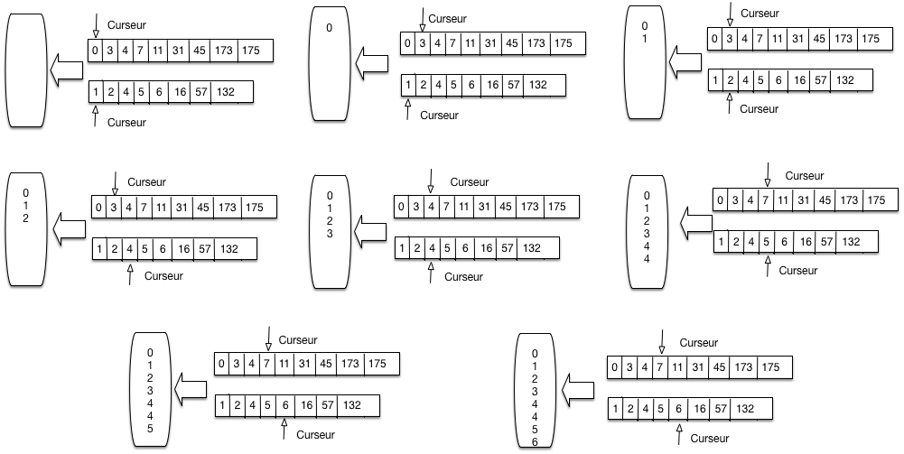
Fig. 6.6 Parcours linéaire pour la fusion de listes triées¶
La Fig. 6.6 se lit de gauche à droite, de haut en bas. On applique tout d’abord deux fois le choix 2, avançant sur la liste A puis la liste B. On avance encore sur la liste B puis la liste A. On se trouve alors face à la situation 2, et on copie les deux valeurs 4 dans la zone de résultat.
Et ainsi de suite. Il est clair qu”un seul parcours suffit. Il devrait être clair également, par construction que la zone de résultat contient une liste triée contenant toutes les valeurs venant soit de A soit de B. .
// Fusion de deux listes l1 et l2
function fusion
{
# $l1 désigne la première liste
# $l2 désigne la seconde liste
$resultat = [];
# Début de la fusion des listes
while ($l1 != null and $l2 != null) do
if ($l1.val == $l2.val) then
# On a trouvé un doublon
$resultat += $l1.val;
$resultat += $l2.val;
# Avançons sur les deux listes
$l1 = $l1.next; $l2 = $l2.next;
else if ($l1.val < $l2.val) then
# Avançons sur l1
$resultat += $l1.val;
$l1 = $l1.next;
else
# Avançons sur l2
$resultat += $l2.val;
$l2 = $l2.next;
fi
done
}
Remarquons que:
L’algorithme fusion se généralise (assez facilement) à plusieurs listes.
Si on fusionne \(n\) listes de taille \(M\), la liste résultante a une taille de \(n \times M\).
La première étape de la phase de fusion de la relation consiste à fusionner les \(\lceil B / M \rceil\) obtenus à l’issue de la phase de tri. On prend pour cela \(M-1\) fragments à la fois, et on leur associe à chacun un bloc en mémoire, le bloc restant étant consacré au résultat. On commence par lire le premier bloc des \(M-1\) premiers fragments dans les \(M-1\) premiers blocs, et on applique l’algorithme de fusion sur les listes triées, comme expliqué ci-dessus. Les enregistrements triés sont stockés dans un nouveau fragment sur disque.
On continue avec les \(M-1\) blocs suivants de chaque fragment, jusqu’à ce que les \(M-1\) fragments initiaux aient été entièrement lues et triés. On a alors sur disque une nouvelle partition de taille \(M \times (M-1)\). On répète le processus avec les \(M-1\) fragments suivants, et ainsi de suite.
À la fin de cette première étape, on obtient \(\lceil \frac{B}{M \times (M-1)}\rceil\) fragments triés, chacune (sauf le dernier qui est plus petit) ayant pour taille \(M \times (M-1)\) blocs. La Fig. 6.7 résume la phase de fusion sous la forme d’un arbre, chaque nœud (agrandi à droite) correspondant à une fusion de \(M-1\) partitions.
{kind=link}
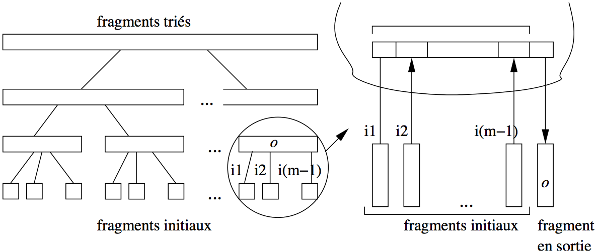
Fig. 6.7 Algorithme de tri-fusion: la phase de fusion¶
Un exemple est donné dans la Fig. 6.7 sur un ensemble de films qu’on trie sur le nom du film. Il y a trois phases de fusion, à partir de 6 fragments initiaux que l’on regroupe 2 à 2.
{kind=link}
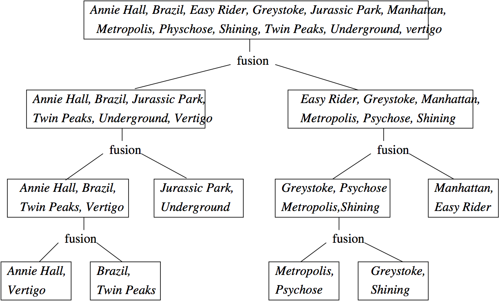
Fig. 6.8 Algorithme de tri-fusion: un exemple¶
Coût du tri-fusion¶
La phase de tri coûte \(B\) écritures pour créer les partitions triées. À chaque étape de la phase de fusion, chaque fragment est lu une fois et les nouveaux fragments créés sont \(M-1\) fois plus grands mais \(M-1\) fois moins nombreux. Par conséquent à chaque étape (pour chaque niveau de l’arbre de fusion), il y a \(2\times B\) entrées/sorties. Le nombre d’étapes, c’est-à-dire le nombre de niveaux dans l’arbre est \(O(\log_{M-1} B)\). Le coût de la phase de fusion est \(O(B \times \log_{M-1} B)\). Il prédomine celui de la phase de tri.
En pratique, un niveau de fusion est en général suffisant. Idéalement, le fichier à trier tient complètement en mémoire et la phase de tri suffit pour obtenir un seul fragment trié, sans avoir à effectuer de fusion par la suite. Si possible, on peut donc chercher à allouer un nombre de bloc suffisant à l’espace de tri pour que tout le fichier puisse être traité en une seule passe.
Il faut bien réaliser que les performances ne s’améliorent pas de manière continue avec l’allocation de mémoire supplémentaire. En fait il existe des « seuils » qui vont entraîner un étape de fusion en plus ou en moins, avec des différences de performance notables, comme le montre l’exemple suivant.
Exemple
Prenons l’exemple du tri d’un fichier de 75 000 blocs de 4 096 octets, soit 307 Mo. Voici quelques calculs, pour des tailles mémoires différentes.
Avec une mémoire \(M > 307 \text{Mo}\), tout le fichier peut être chargé et trié en mémoire. Une seule lecture suffit.
Avec une mémoire \(M = 2 \text{Mo}\), soit 500 blocs.
on divise le fichier en \(\frac{307}{2} = 154\) fragments. Chaque fragment est trié en mémoire et stocké sur le disque.
On a lu et écrit une fois le fichier en entier, soit 614 Mo.
On associe chaque fragment à une bloc en mémoire, et on effectue la fusion (noter qu’il reste \(500 - 154\) blocs disponibles).
On a lu encore une fois le fichier, pour un coût total de \(614 + 307 = 921\) Mo.
Avec une mémoire \(M = 1 \text{Mo}\), soit 250 blocs.
on divise le fichier en \(307\) fragments. Chaque fragment est trié en mémoire et stocké sur le disque.
On a lu et écrit une fois le fichier en entier, soit 714 Mo.
On associe les 249 premiers fragments à un bloc en mémoire, et on effectue la fusion (on garde la dernière bloc pour la sortie). On obtient un nouveau fragment \(F_1\) de taille 249 Mo.
On prend les \(307 - 249 = 58\) fragments qui restent et on les fusionne: on obtient \(F_2\) , de taille 58 Mo.
On a lu et écrit encore une fois le fichier, pour un coût total de \(614 \times 2 = 1228\) Mo.
Finalement on prend les deux derniers fragments, \(F_1\) et \(F_2\) , et on les fusionne. Cela reprsente une lecture de plus, soit \(1 228 + 307 = 1 535\) Mo.
Il est remarquable qu’avec seulement 2 Mo, on arrive à trier en une seule étape de fusion un fichier qui est 150 fois plus gros. Il faut faire un effort considérable d’allocation de mémoire (passer de 2 Mo à 307) pour arriver à éliminer cette étape de fusion. Noter qu’avec 300 Mo, on garde le même nombre de niveaux de fusion qu’avec 2 Mo (quelques techniques subtiles, non présentées ici, permettent quand même d’obtenir de meilleures performances dans ce cas).
En revanche, avec une mémoire de 1Mo, on doit effectuer une étape de fusion en plus, ce qui représente plus de 700 E/S supplémentaires.
En conclusion: on doit pouvoir effectuer un tri avec une seule phase de fusion, à condition de connaître la taille des tables qui peuvent être à trier, et d’allouer une mémoire suffisante au tri.
L’opérateur de tri-fusion¶
Comme implanter le tri-fusion sous forme d’itérateur? Réponse: l’ensemble du tri est effectué dans la fonction open(), le next() ne fait que lire un par un les nuplets du fichier trié stocké dans la zone temporaire. Cela s’explique par le fait qu’il est impossible de fournir un résultat tant que l’ensemble du tri n’a pas été effectué. C’est seulement alors que l’on peut savoir quel est le plus petit élément, et le fournir comme réponse au premier appel next().
La conséquence essentielle est que le tri est un opérateur bloquant. Quand on exécute une requête contenant un tri, rien ne se passe tant que le résultat n’a pas été complètement trié. Entre la requête
select * from Film
et la requête
select * from Film order by titre
La différence est donc considérable. Quelle que soit la taille de la table, l’exécution de la première donne un premier nuplet instantanément: il suffit que le plan accède au premier enregistrement du fichier. Dans le second cas, il faudra attendre que toute la table ait été lue et triée.
Quiz¶
Avec une mémoire de \(M\) blocs, quelle est la taille des fragments ?
Avec une mémoire de \(M+1\) blocs, je peux fusionner \(M\) fragments. Quelle est la taille maximale de fichier obtenu par une étape de fusion ?
On en déduit la taille maximale d’un fichier triable avec une fusion.
Je peux fusionner les fragments issus d’une fusion de fragments. Avec deux étapes de fusion, la taille maximale du fichier trié obtenu est de :
Quelle est la formule permettant d’obtenir le nombre de fusions nécessaires pour trier un fichier de taille F:
S4: Algorithmes de jointure¶
Supports complémentaires:
Passons maintenant aux algorithmes de jointure. Avec les opérateurs
présentés dans cette section, nous complétons notre catalogue d’opérateurs
et nous saurons exécuter toutes les requêtes SQL dites conjonctives,
c’est-à-dire ne comprenant ni négation (not exists) ni union. Cela couvre
beaucoup de requêtes et montre que l’implantation d’un moteur d’exécution de
requêtes SQL n’est finalement pas si compliqué.
select a1, a2, .., an
from T1, T2, ..., Tm
where T1.x = T2.y and ...
order by ...
La jointure est une des opérations les plus courantes et les plus coûteuses, et savoir l’évaluer de manière efficace est une condition indispensable pour obtenir un système performant. On peut classer les algorithmes de jointure en deux catégories, suivant l’absence ou la présence d’index sur les attributs de jointure. En l’absence d’index, les trois algorithmes les plus répandus sont les suivants:
L’algorithme le plus simple est la jointure par boucles imbriquées. Il est malheureusement très coûteux dès que les tables à joindre sont un tant soit peu volumineuses.
L’algorithme de jointure par tri-fusion est basé, comme son nom l’indique, sur un tri préalable des deux tables. C’est le plus ancien et le plus répandu des concurrents de l’algorithme par boucles imbriquées, auquel il se compare avantageusement dès que la taille des tables dépasse celle de la mémoire disponible.
Enfin la jointure par hachage est une technique qui donne de très bons résultats quand une des tables au moins tient en mémoire.
Quand un index est disponible (ce qui est le cas le plus courant, notamment quand la jointure associe la clé primaire d’une table à la clé étrangère d’une autre), on utilise une variante de l’algorithme par boucles imbriquées avec traversée d’index, dite jointure par boucles indexée.
Note
si les deux tables sont indexées, on utilise parfois une variante du tri-fusion sur les index, mais cette technique pose quelques problèmes et nous ne l’évoquerons que brièvement.
On note dans ce qui suit \(R\) et \(S\) les relations à joindre et \(T\) la relation résultat. Le nombre de blocs est noté respectivement par \(B_R\) et \(B_S\) . Le nombre d’enregistrements de chaque relation est respectivement \(N_R\) et \(N_S\).
Nous commençons par l’algorithme le plus efficace et le plus courant: celui utilisant un index.
Jointure avec un index¶
La jointure entre deux tables comporte le plus souvent une condition de jointure qui associe la clé primaire d’une table à la clé étrangère de l’autre. Voici quelques exemples pour s’en convaincre.
Les films et leur metteur en scène
select * from Film as f, Artiste as a where f.id_realisateur = a.idLes artistes et leurs rôles
select * from Artiste as a, Role as r where a.id = r.id_acteurLes employés et leur département
select * from emp e, dept d where e.dnum = d.num
Cette forme de jointure est courante car elle est « naturelle »: elle consiste à reconstruire l’information dispersée entre plusieurs tables par le processus de normalisation du schéma. Le point important (pour les performances) est que la condition de jointure porte sur au moins un attribut indexé (la clé primaire) et éventuellement sur deux si la clé étrangère est, elle aussi, indexée.
Cette situation permet l’exécution d’un algorithme à la fois très simple et assez efficace (on suppose pour l’instant que seule la clé primaire est indexée):
on parcourt séquentiellement la table contenant la clé étrangère;
pour chaque nuplet, on utilise la valeur de la clé étrangère pour accéder à l’index sur la clé primaire de la second table: on récupère l’adresse adr d’un nuplet;
il reste à effectuer un accès direct, avec l’adresse adr, pour obtenir le second nuplet et constituer la paire.
Prenons comme exemple la première jointure SQL donnée ci-dessus. On va parcourir
la table Film qui contient la clé étrangère id_réalisateur. Pour
chaque nuplet film obtenu durant ce parcours, on prend la valeur
de id_réalisateur et on recherche, avec l’index, l’adresse
de l’artiste correspondant. Il reste à effectuer un accès direct à la table Artiste.
Nous avons un nouvel opérateur que nous appellerons IndexedJoin. Il
consomme des données fournis par deux autres opérateurs que nous avons déjà définis:
un parcours séquentiel FullScan, un parcours d’index IndexScan.
Il est complété par un troisième, lui aussi déjà étudié: DirectAccess.
La forme du programme qui effectue ce type de jointure est illustrée
par la Fig. 6.9.
Elle peut paraître un peu complexe,
mais elle vaut la peine d’être étudiée soigneusement. Le motif est récurrent et doit
pouvoir être repéré quand on étudie un plan d’exécution.
{kind=link}
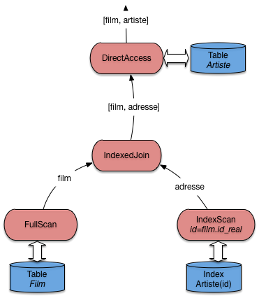
Fig. 6.9 Algorithme de jointure avec index¶
L’opérateur IndexedJoin lui-même fait peu de choses puisqu’il s’appuie
essentiellement sur d’autres composants qui font déjà une bonne partie du travail.
Implanter un moteur d’exécution, tâche qui peut sembler extrêmement complexe
à priori, s’avère en fait relativement simple avec cette approche très générique
et décomposant les opérations nécessaires en briques élémentaires.
Voici le pseudo-code de la fonction next() de l’opérateur de jointure.
Il faudrait, dans une implantation réelle, ajouter quelques contrôles,
mais l’essentiel est là, et reste relativement simple.
function nextIndexJoin
{
# $tScan est l'opérateur de parcours séquentiel de la première table
# On récupère un nuplet
$nuplet = $tScan.next();
# On crée un opérateur de parcours d'index
iScan = new IndexScan ();
# On exécute le parcours d'index avec la clé étrangère
$iScan.open ($nuplet.foreignKey);
# On récupère l'adresse
addr = $iScan.next();
# Et on renvoie la paire avec le nuplet et l'adresse
return [$nuplet, $addr];
}
Cet algorithme peut être considéré comme le meilleur possible pour une jointure.
Il s’appuie essentiellement sur un parcours d’index qui, en pratique, va s’effectuer en mémoire RAM car un arbre-B est compact, très sollicité, et résidera dans le cache la plupart du temps.
Il permet un pipelinage complet: quelle que soit la taille des données, une application communiquant avec ce plan d’exécution recevra tout de suite la première paire-résultat, et obtiendra les suivantes avec très peu de latence à chaque appel next().
En contrepartie, l’algorithme nécessite des accès directs (aléatoires) pour obtenir les nuplets de la seconde table. C’est loin d’être très efficace, pour des raisons déjà soulignées, et explique que la jointure reste une opération coûteuse.
Pour conclure sur cet algorithme, notez qu’il est présenté ici comme s’appuyant sur un parcours séquentiel, mais qu’il fonctionne tout aussi bien si la source de données (à gauche) est n’importe quel autre opérateur. Il est donc très facile à intégrer dans les plans d’exécution très complexes comprenant plusieurs jointures, sélection, projections, etc.
Jointure avec deux index¶
Peut-on faire mieux si les deux tables sont indexées? Lorsque \(R\) et \(S\) ont un index sur l’attribut de jointure, on peut tirer parti du fait que les feuilles de ceux-ci sont triées sur cet attribut. En fusionnant les feuilles des index \(B_R\) et \(B_S\) de la même manière que pendant la phase de fusion de l’algorithme de jointure par tri-fusion, on obtient une liste de couples d’adresses d’enregistrements de \(R\) et \(S\) à joindre. Cette première phase est très efficace, car les deux index sont très probablement en mémoire et l’algorithme de fusion est lui-même simple et performant.
La deuxième phase consiste à lire les enregistrements par deux accès directs,
l’un sur \(R\), l’autre sur \(S\). C’est ici que les choses
se compliquent, car la multiplication des accès aléatoires devient très pénalisante.
Comme déjà discuté, si une partie significative d’une table est concernée, il
est préférable d’efectuer un parcours séquentiel qu’une succession d’accès directs.
Pour cette raison, beaucoup
de SGBD (dont Oracle), en
présence d’index sur l’attribut de jointure dans les deux relations,
préfèrent quand même appliquer l’algorithme IndexedJoin. L’amélioration
permise par cette situation reste le choix de la table à parcourir séquentiellement:
pour des raisons évidentes on prend la plus petite.
Jointure par boucles imbriquées¶
Nous abordons maintenant le cas des jointures où aucun index n’est disponible. Disons tout de suite que les performances sont alors nettement moins bonnes, et devraient amener à considérer la création d’un index approprié pour des requêtes fréquemment utilisées.
L’algorithme direct et naïf, que nous appellerons NestedLoop,
s’adapte à tous les prédicats de jointure.
Il consiste à énumérer tous les enregistrements dans le produit cartésien de
\(R\) et \(S\) (en d’autres termes, toutes les paires possibles)
et garde ceux qui satisfont le prédicat de jointure. La fonction de base
est la jointure de deux listes en mémoire, L1 et L2,
et se décrit simplement comme suit:
function JoinList
{
# $L1 est la liste dite "extérieure"
# $L2 est la liste dite "intérieure"
# $condition est la condition de jointure
resultat = [];
for nuplet1 in $L1
do
for nuplet2 in $L2
do
if (condition ($nuplet1, $nuplet2) = true) the
$resultats[] = ($nuplet1, $nuplet2);
fi
done
done
}
Le coût de cette fonction se mesure au nombre de fois où on effectue le test
de la condition de jointure. Il est facile de voir que chaque nuplet de L1
est comparé à chaque nuplet de L2, d’où un coût de \(|L1| \times |L2|\).
Maintenant, ce qui nous intéresse dans un contexte de base de données, c’est aussi
(surtout) le nombre de lectures de blocs nécessaires. Dès lors que la jointure implique
des accès disques, ces entrées/sorties (E/S) constituent le facteur
prédominant. La méthode de base, illustrée par la Fig. 6.10,
consiste à charger toutes les paires de blocs en mémoire, et à appliquer
la fonction JoinList sur chaque paire.
{kind=link}
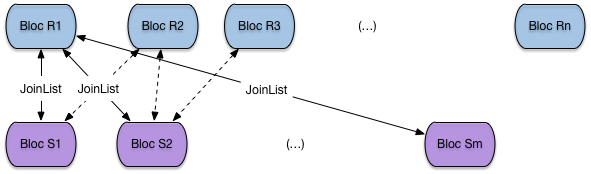
Fig. 6.10 Boucle imbriquée sur les blocs¶
Le pseudo-code suivant montre la jointure par boucle imbriquée, constituant toutes les paires de blocs par un unique parcours séquentiel sur la première table, et des parcours séquentiels répétés sur la seconde.
function NestedLoopJoin
{
# $R est la tablee dite "extérieure"
# $S est la table dite "intérieure"
# $condition est la condition de jointure
resultat = [];
for blocR in $R
do
for blocS in $S
do
JoinList ($blocR, $blocS)
done
done
}
Le principale mérite (le seul) de cet algorithme est de demander très peu de mémoire: deux blocs suffisent. En revanche, le nombre de lectures et très important:
il faut lire toute la table R,
il faut lire autant de fois la table S qu’il y a de blocs dans R.
Le nombre de lectures est donc \(B_R + B_R \times B_S\). Cette petite formule montre au passage qu’il est préférable de prendre comme table extérieure la plus petite des deux.
Cela étant, on peut faire beaucoup mieux en utilisant plus de mémoire. Soit \(R\) la table la plus petite. Si le nombre de blocs \(M\) est au moins égal à \(B_R + 1\), la table \(R\) tient en mémoire centrale. On peut alors lire \(S\) une seule fois, bloc par bloc, en effectuant à chaque fois la jointure entre le bloc et l’ensemble des blocs de \(R\) chargés en RAM (Fig. 6.11).
{kind=link}
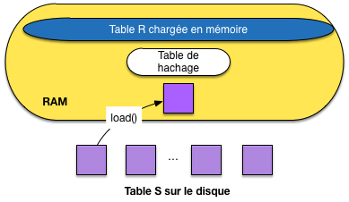
Fig. 6.11 Boucle imbriquée avec chargement complet d’une table en RAM¶
Avec cette solution (très fréquemment applicable en ces temps où la mémoire RAM est devenue très grosse), le coût est de \(B_R + B_S\): une seule lecture des deux tables suffit. D’un coût quadratique dans les tailles des relations, lorsqu’on n’a que 3 blocs, on est passé à un coût linéaire. Cet algorithme en devient très efficace et simple à implanter.
S’il s’agit d’une équi-jointure, une variante encore améliorée de cet algorithme consiste à hacher \(R\) en mémoire à l’aide d’une fonction de hachage \(h\) . Alors pour chaque enregistrement de \(S\), on cherche par \(h(s)\) les enregistrements de \(R\) joignables. Le coût en E/S est inchangé, mais le coût CPU est linéaire dans le nombre d’enregistrement des tables \(N_R + N_S\) (alors qu’avec la procédure JoinList c’est une fonction quadratique du nombre d’enregistrements).
{kind=link}
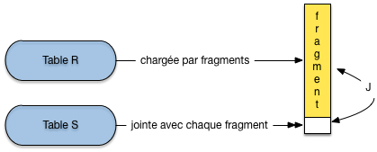
Fig. 6.12 Boucle imbriquée avec chargement par fragments d’une table en RAM¶
Si \(R\) ne tient pas en mémoire car \(B_R > M -1\), il reste la version la plus générale de la jointure par boucles imbriquées (Fig. 6.12): on découpe \(R\) en fragments de taille \(M-1\) blocs et on utilise la variante ci-dessus pour chaque groupe. \(R\) est lue une seule fois, groupe par groupe, \(S\) est lue \(\lceil \frac{B_R}{M-1} \rceil\) fois. On obtient un coût final de:
Exemple
On prend l’exemple d’une jointure entre Film et Artiste en supposant, pour les besoins de la cause, qu’il n’y a pas d’index. La table Film occupe 1000 blocs, et la table Artiste 10 000 blocs. On suppose que la mémoire disponible a pour taille \(M=251\) blocs.
En prenant la table Artiste comme table extérieure, on obtient le coût suivant:
\[10 000 + \lceil \frac{10000}{250} \rceil \times 1000 = 50 000\]Et en prenant la table Film comme table extérieure:
\[1 000 + \lceil \frac{1000}{250} \rceil \times 1000 = 41 000\]
Conclusion: il faut prendre la table la plus petite comme table extérieure. Cela suppose bien entendu que l’optimiseur dispose des statistiques suffisantes.
En résumé, cette technique est simple, et relativement efficace quand une des deux relations peut être découpée en un nombre limité de groupes (autrement dit, quand sa taille par rapport à la mémoire disponible reste limitée). Elle tend vite cependant à être très coûteuse en E/S, et on lui préfère donc en général la jointure par tri-fusion, ou la jointure par hachage, présentées dans ce qui suit.
Jointure par tri-fusion¶
L’algorithme de jointure par tri-fusion que nous présentons ici s’applique à l’équijointure (jointure avec égalité). C’est un exemple de technique à deux phases: la première consiste à trier les deux tables sur l’attribut de jointure (si elles ne le sont pas déjà). Ce tri facilite l’identification des paires d’enregistrement partageant la même valeur pour l’attribut de jointure.
À l’issue du tri on dispose de deux fichiers temporaires stockés sur disque
Note
En fait on évite d’écrire le résultat de la dernière étape de fusion du tri, en prenant « à la volée » les enregistrements produits par l’opérateur de tri. Il s’agit d’un exemple de petites astuces qui peuvent avoir des conséquences importantes, mais dont nous omettons en général la description pour des raisons de clarté.
On utilise l’algorithme de tri externe vu précédemment pour cette première étape. La deuxième phase, dite de fusion, consiste à lire bloc par bloc chacun des deux fichiers temporaires et à parcourir séquentiellement en parallèle ces deux fichiers pour trouver les enregistrements à joindre. Comme les fichiers sont triés, sauf cas exceptionnel, chaque bloc n’est lu qu’une fois.
Prenons l’équijointure de \(R\) et \(S\) sur les attributs a et b.
select * from R, S where R.a = S.b
On va trier \(R\) et \(S\) et on parcourt ensuite les tables triées en parallèle. Regardons plus en détail la fusion. C’est une variante très proche de l’agorithme de fusion de liste. On commence avec les premiers enregistrements \(r_1\) et \(s_1\) de chaque table.
Si \(r_1.a = s_1.b\) , on joint les deux enregistrements, on passe au enregistrements suivants, jusqu’à ce que \(r_i.a \not= s_i.b\).
Si \(r_1.a < s_1.b\), on avance sur la liste de \(R\).
Si \(r_1.a > s_1.b\), on avance sur la liste de \(S\).
Donc on balaie une table tant que l’attribut de jointure a une valeur inférieure à la valeur courante de l’attribut de jointure dans l’autre table. Quand il y a égalité, on fait la jointure. Ceci peut impliquer la jointure entre plusieurs enregistrements de \(R\) en séquence et plusieurs enregistrements de \(S\) en séquence. Ensuite on recommence.
L’opérateur de jointure peut s’appuyer sur l’opérateur de tri, déjà
étudié. Il suffit donc d’implanter la jointure de deux listes triées
dans un opérateur Merge. Voici la fonction next() de cet opérateur,
avec deux opérateurs de tris opérant respectivement sur la première
et la seconde table (plus généralement, ces opérateurs de tri peuvent
opérer sur n’importe quel sous-plan d’exécution).
function nextMerge
{
# $triR est l'opérateur de tri sur la première table
# $triS est l'opérateur de tri sur la seconde table
# a et b désignent les attributs de jointure
# Récupération de nuplets fournis par les opérateurs
$nupletR = $triR.next();
$nupletS = $triS.next();
# Tant que les deux nuplets de joignent pas sur a et b, on avance
# sur une des deux listes
while ($nupletR.a != $nupletS.b) do
if ($nupletR.a < $nupletS.b) then
$nupletR = $triR.next();
else
$nupletS = $triR.next();
fi
done
return [$nupletR, $nupletS];
}
Le plan d’exécution typique d’une jointure par tri-fusion avec cet opérateur est illustré par la Fig. 6.13.
{kind=link}
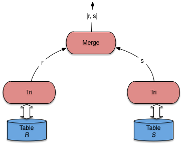
Fig. 6.13 Plan d’exécution type pour la jointure par tri-fusion¶
La jointure \(s\) par tri-fusion est illustrée dans la Fig. 6.14.
{kind=link}
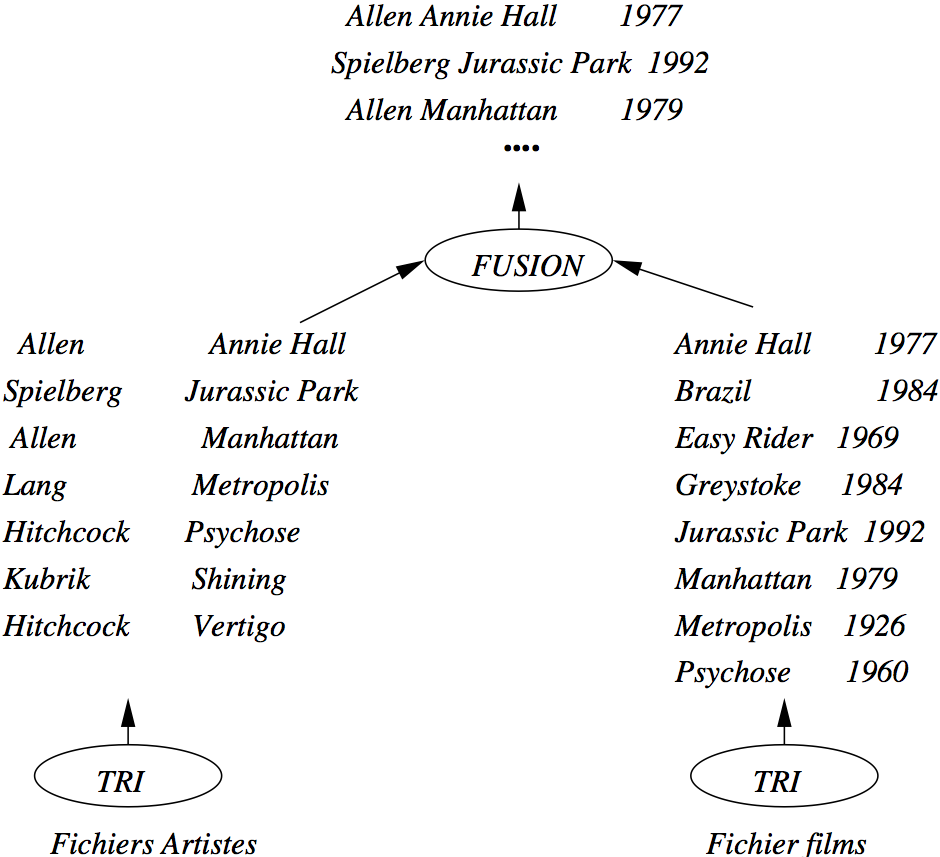
Fig. 6.14 Exemple de jointure par tri-fusion¶
Le coût de la jointure par tri-fusion est important, et impose une latence due à la phase de tri initiale. Une fois la phase de fusion débutée, le débit est en revanche très rapide. La performance dépend donc essentiellement du tri, et donc de la mémoire disponible. C’est l’algorithme privilégié par les SGBD pour la jointure sans index de très grosses tables (situation qu’il vaut mieux éviter quand c’est possible).
Jointure par hachage¶
Comme tous les algorithmes à base de hachage, cet algorithme ne peut s’appliquer qu’à une équi-jointure. Comme l’algorithme de tri-fusion, il comprend deux phases: une phase de partitionnement des deux relations en \(k\) fragments chacune, avec la même fonction de hachage, et une phase de jointure proprement dite.
La première phase a pour but de réduire le coût de la jointure proprement dite de la deuxième phase. Au lieu de comparer tous les enregistrements de \(R\) et \(S\), on ne comparera les enregistrements de chaque fragment \(F_R^i\) de \(R\) qu’aux enregistrements du fragment \(F_S^i\) associée de \(S\). Notez bien qu’il s’agit du même exposant \(i\): les fragements sont associés par paire, ce qui implique que l’on a la garantie qu’aucun nuplet de \(F_R^i\) ne joint avec un nuplet de \(F_S^j\), pour \(i \not= j\).
Le partitionnement de \(R\) se fait par hachage. On suppose toujours
que a et b sont les attributs de jointure respectifs et on
note \(h\) la
fonction de hachage qui s’applique à la valeur de a
ou b et renvoie un entier compris entre 1 et \(k\).
Un enregistrement \(r\) de \(R\) est donc placé dans le fragment \(F_R^{h(r.a)}\); un enregistrement \(s\) de \(S\) est donc placé dans le fragment \(F_S^{h(s.b)}\). On obtient exactement le même nombre de fragments pour \(R\) et \(S\), placés sur le disque si nécessaire, comme le montre la figure Première phase de la jointure par hachage: le partitionnement.
{kind=link}
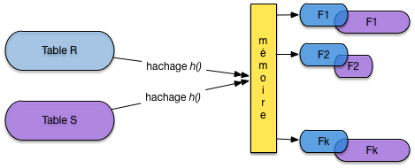
Fig. 6.15 Première phase de la jointure par hachage: le partitionnement¶
Important
Comment est choisi \(k\), le nombre de fragments? Le critère que, pour la plus petite des deux tables, chaque fragment doit tenir dans la mémoire disponible. Si, par exemple, \(R\) est la plus petite des deux tables et occupe 100 blocs, alors que 20 blocs de RAM sont disponibles, il faudra au moins \(k=5\) fragments. Pourquoi? Lire la suite.
On peut alors passer à la seconde phase, dite de jointure. La remarque fondamentale ici est la suivante: si deux nuplets \(r\) et \(s\) doivent être joints, alors on a \(h(r.a) = h(s.b)=u\) et on les trouvera, respectivement, dans \(F_R^u\) et \(F_S^u\). En d’autres termes, il suffit d’effectuer la jointure sur les paires de fragments correspondant à la même valeur de la fonction de hachage.
Note
Le paragraphe qui précède est vraiment le cœur de l’algorithme de hachage et justifie tout sont fonctionnement. Lisez-le et relisez-le jusqu’à être convaincus que vous le comprennez.
La deuxième phase consiste alors pour \(i = 1, ..., k\), à lire le fragment \(F_R^i\) de \(R\) en mémoire et à effectuer la jointure avec le fragment \(F_S^i\) de \(S\). La technique de jointure à appliquer au fragment est exactement celle par boucle imbriquées, décrite ci-dessus, quand l’une des deux tables tient en RAM: . Le point important (et qui explique le choix du nombre de fragments) est qu’au moins l’un des deux fragments à joindre doit résider en mémoire; l’autre, lu séquentiellement, peut avoir une taille quelconque.
La Fig. 6.16 montre le calcul de la jointure pour deux fragments. Celui de la première table est entièrement en mémoire, celui de la seconde est lu séquentiellement et placé au fur et à mesure de la lecture dans le reste de la mémoire disponible, pour être joint avec le fragment résidant.
{kind=link}
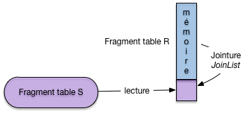
Fig. 6.16 Première phase de la jointure par hachage: la jointure¶
Le coût de la première phase de partitionnement de cet algorithme est \(2 \times (B_R + B_S)\). Chaque relation est lue entièrement et hachée dans les fragments qui sont écrits sur disque bloc par bloc.
Le coût de la deuxième phase est de \(B_R + B_S\). En effet les relations partitionnées sont lues une fois chacune, fragment par fragment. Le coût total de cet algorithme est donc \(3 \times (B_R + B_S)\). Noter que cet algorithme est très gourmand en mémoire. Il est bien adapté aux jointures déséquilibrées pour lesquelles une des tables est petite par rapport à lamémoire RAM disponible. Dans le meilleur des cas où un seul fragment est nécessaire (la table tient entièrement en mémoire) on retrouve tout simplement la jointure par boucles imbriquées décrite précédemment. La jointure par hachage peut être vue comme une généralisation de cet algorithme simple.
Comment implanter cet algorithme de jointure sous forme d’itérateur? Et bien,
comme pour le tri, toute la phase de hachage s’effectue dans le open()
et cet opérateur est donc bloquant: la phase de hachage correspond
à une latence perçue par l’utilisateur qui attend sans que rien (en
apparence) ne se passe. La phase de jointure peut, elle, être très rapide,
et surtout fournit régulièrement des nuplets à l’application cliente.
Concluons cette section avec deux remarques:
Excepté les algorithmes basés sur une boucle imbriquée avec ou sans index, les algorithmes montrés ont été conçus pour le prédicat d’égalité. Naturellement, indépendamment de l’algorithme, le nombre des enregistrements du résultat est vraisemblablement beaucoup plus important pour de telles jointures que dans le cas d’égalité.
Cette section a montré que l’éventail des algorithmes de jointure est très large et que le choix d’une méthode efficace n’est pas simple. Il dépend notamment de la taille des relations, des méthodes d’accès disponibles et de la taille disponible en mémoire centrale. Ce choix est cependant fondamental parce qu’il a un impact considérable sur les performances. La différence entre deux algorithmes peut dans certains cas atteindre plusieurs ordres de grandeur.
La tendance est à l’utilisation de plus en plus fréquente de la joiunture par hachage qui remplace l’algorithme de tri-fusion qui était privilégié dans les premiers temps des SGBD relationnels. La taille atteinte par les mémoires RAM est sans doute le principal facteur explicatif de ce phénomène.
Quiz¶
Pourquoi la clé primaire d’une table doit-elle être indexée (plusieurs réponses possibles) :
Considérons les tables des employés et des départements suivantes. Les clés primaires sont indexées.
Enum
Nom
Dnum
E1
Benjamin
D1
E2
Philippe
D2
E3
Serge
D1
Dnum
Dnom
D1
INRIA
D2
CNAM
Pour une jointure avec index, combien de parcours d’index doit-on effectuer ?
Supposons que l’attribut
Dnumdans la tableEmployésoit indexé. Combien de parcours d’index devrait-on effectuer en prenant la tableDeptcomme table directrice (à gauche).Dans la requête suivante, peut-on appliquer la jointure par boucles imbriquées indexées, f() et g() étant des fonctions quelconques ?
select * from Emp, Dept where f(E.dnum) = g(Dept.dnum)Soit la jointure entre deux tables T(ABCD) et S(MNO) dans la requête suivante :
select * from T, S where T.A=S.MÀ quels attributs faut-il appliquer la fonction de hachage pour la jointure ?
Pourquoi 2 nuplets à joindre sont-ils forcément dans des fragments associés ?
Peut-on appliquer la jointure par hachage à la requête suivante :
select * from T, S where T.A <= S.M
Exercices¶
Exercice ex-iter1: définition d’itérateurs
Définir sous forme de pseudo-code (
open()etnext()) un itérateurminqui renvoie le nuplet de sa source ayant la valeur minimale pour un attributatt_min.Définir un itérateur
distinctqui élimine les doublons de sa source.
Exercice ex-iter2: plans d’exécution
Donner des plans d’exécution pour les requêtes suivantes:
Avec clause
order byselect titre from Film order by anneeRecherche d’un élément minimal
select min(annee) from FilmElimination des doublons
select distinct genre from Film
Exercice ex-opalgo1: comprendre le tri externe
Soit un fichier de 10 000 blocs et une mémoire cache de 3 blocs. On trie ce fichier avec l’algorithme de tri-fusion.
Combien de fragments sont produits pendant la première passe?
Combien d’étapes de fusion faut-il pour trier complètement le fichier?
Quel est le coût total en entrées/sorties?
Combien faut-il de blocs en mémoire faut-il pour trier le fichier en une fusion seulement.
Répondre aux mêmes questions en prenant un fichier de 20 000 blocs et 5 blocs de mémoire cache.
Exercice ex-join1: coût des jointures par boucles imbriquées
Soit deux relations R et S, de tailles respectives |R| et |S| (en nombre de blocs). On dispose d’une mémoire mem de taille M, dont les blocs sont dénotés \(mem[1], mem[2], \ldots, mem[M]\).
Donnez la formule exprimant le coût d’une jointure \(R \Join S\), en nombre d’entrées/sorties, pour l’algorithme suivant:
$posR = 1 # On se place au début de R while [$posR <= |R|] do Lire R[$posR] dans $mem[1] # On lit les blocs 1 par 1 $posS = 1 # On se place au début de S while ($posS <= |S|) do Lire S[$posS] dans $mem[2] # On lit les blocs 1 par 1 # JoinList est l'algorithme donné en cours JoinList (mem[1], mem[2]) $posS = $posS + 1 # Bloc suivant de S done $posR = $posR + 1 # Bloc suivant de R doneMême question avec l’algorithme suivant
$posR = 1 # On se place au début de R while [$posR <= |R|] do Lire R[p$osR..($posR+M-1)] dans $mem[1..M-1] # On lit M-1 blocs de R $posS = 1 while ($posS <= |S|) do Lire S[$posS] dans $mem[M] # On lit les blocs 1 par 1 # JoinList est l'algorithme donné en cours JoinList (mem[1..M-1], mem[M]) $posS = $posS + 1 # Bloc suivant de S done $posR = $posR + M - 1 # On lit les M - 1 blocs suivants de R doneQuelle table faut-il prendre pour la boucle extérieure? La plus petite ou la plus grande,?
Exercice ex-joincost: coût des jointures
On suppose que \(|R| = 10\,000\) blocs, \(|S|=1\,000\) et M=51. On a 10 enregistrements par bloc,
best la clé primaire de S et on suppose que pour chaque valeur deR.aon trouve en moyenne 5 enregistrements dans R. On veut calculer \(\pi_{R.c} (R \Join_{a=b} S)\).
Donnez le nombre d’entrée-sorties dans le pire des cas pour les algorithmes par boucles imbriquées de l’exercice ex-join1.
Même question en supposant (a) qu’on a un index sur R.a, (b) qu’on a un index sur S.b, (c) qu’on a deux index, sachant que dans tous les cas l’index a 3 niveaux.
Même question pour une jointure par hachage.
Même question avec un algorithme de tri-fusion.

Ce cours de Philippe Rigaux est mis à disposition selon les termes de la licence Creative Commons Attribution - Pas d’Utilisation Commerciale - Partage dans les Mêmes Conditions 4.0 International.
Table Of Contents
- 1. Introduction
- 2. Dispositifs de stockage
- 3. Structures d’index: l’arbre B
- 4. Structures d’index: le hachage
- 5. Moteurs de stockage
- 6. Opérateurs et algorithmes
- 7. Evaluation et optimisation
- 8. Travaux pratiques: optimisation
- 9. Transactions
- 10. Contrôle de concurrence
- 11. Reprise sur panne
- 12. Annales des examens
Recherche
Saisissez un ou plusieurs mots-clés.